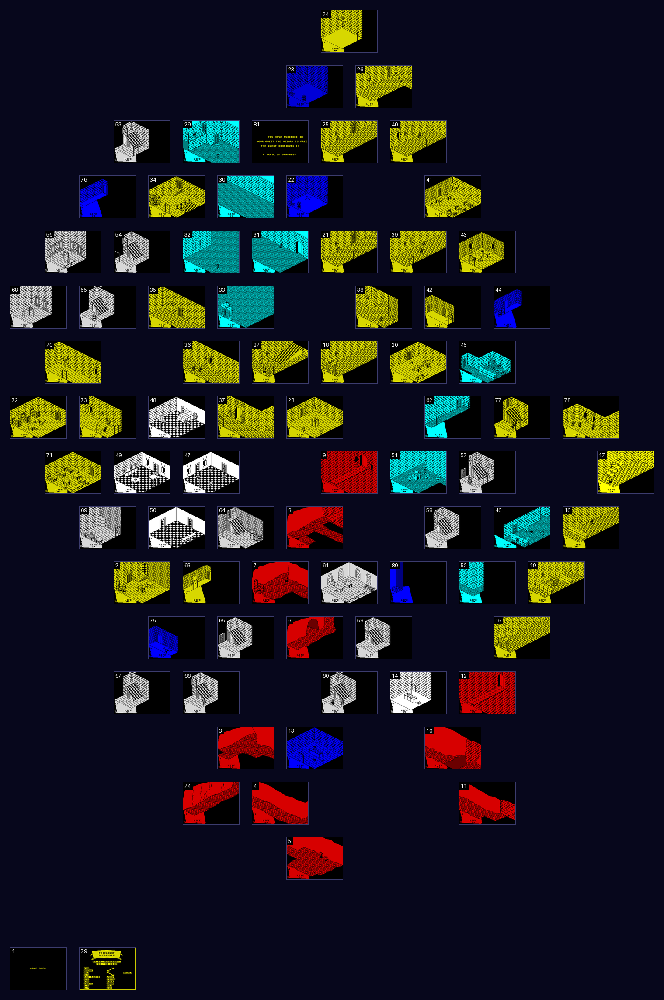
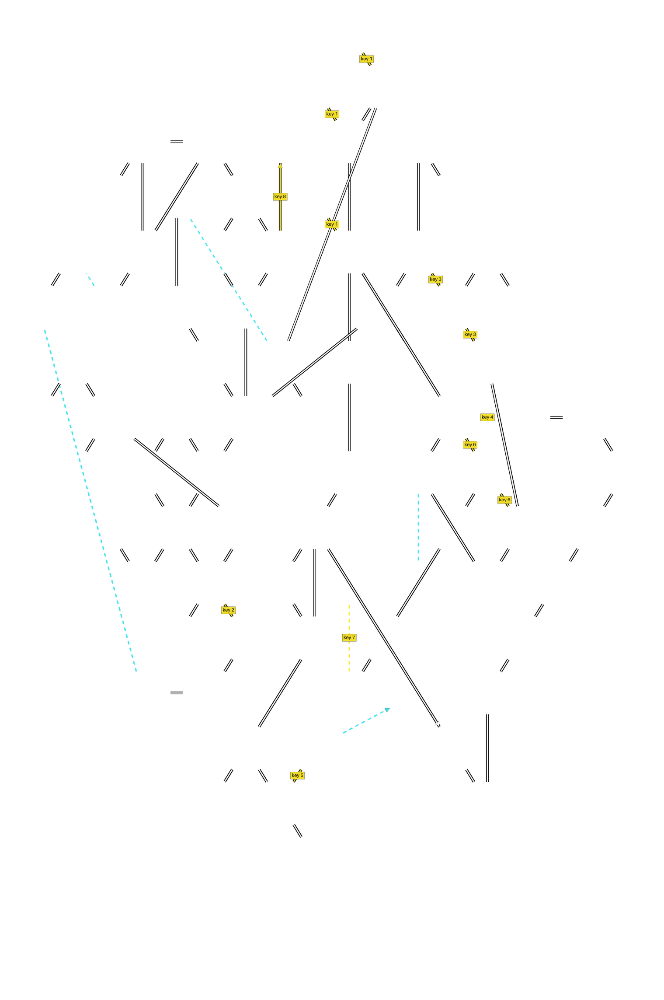
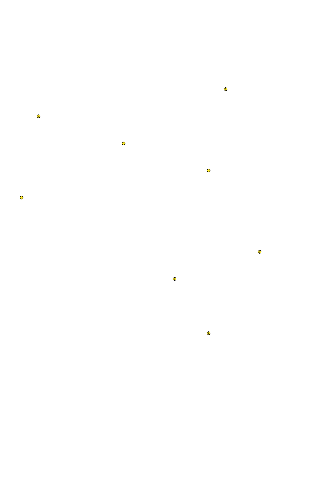
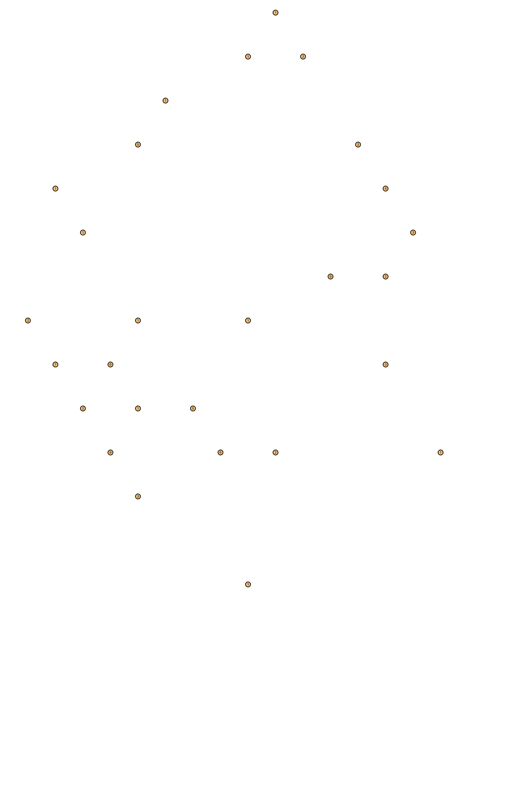
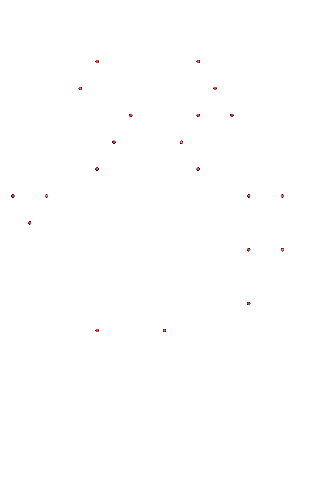
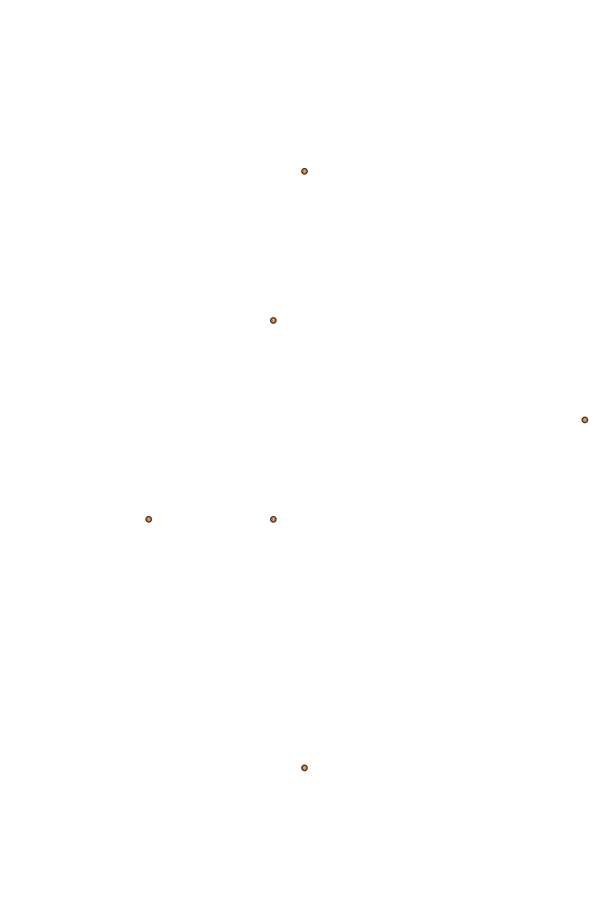
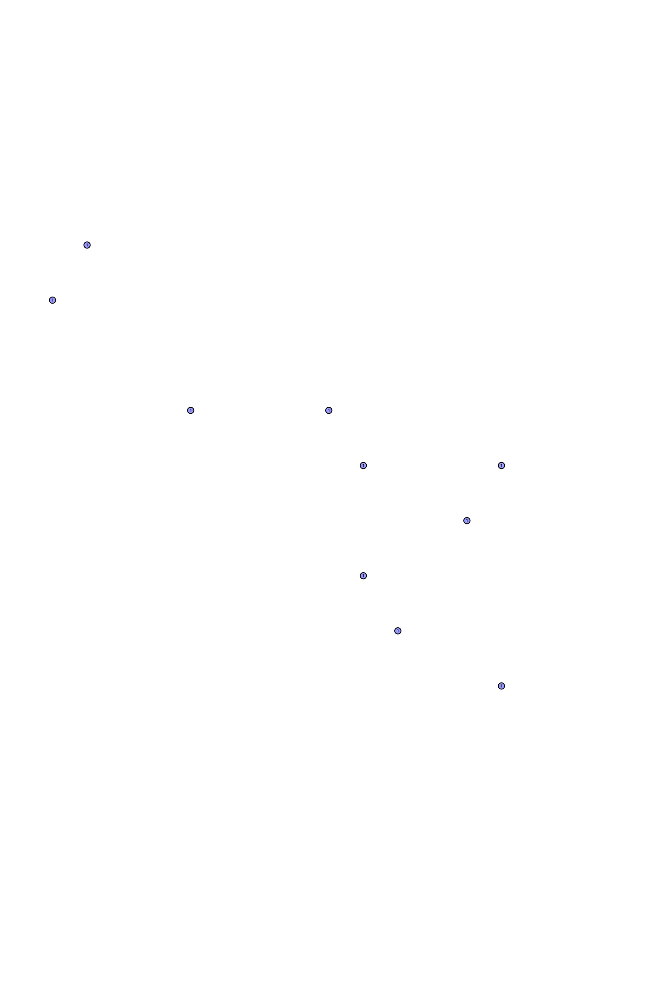
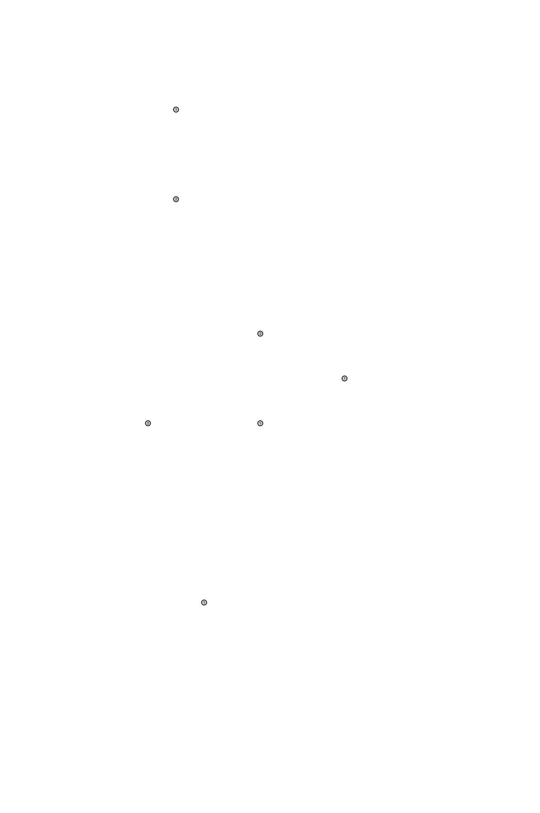
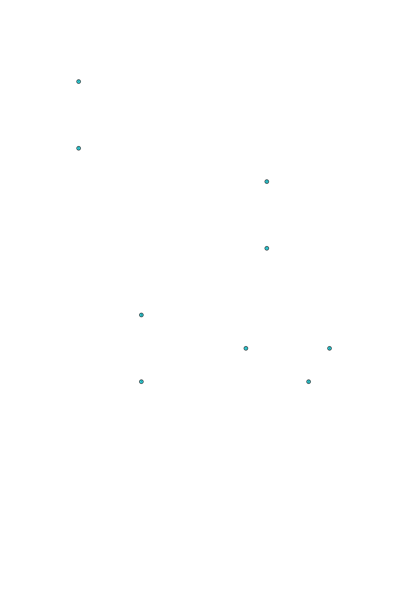
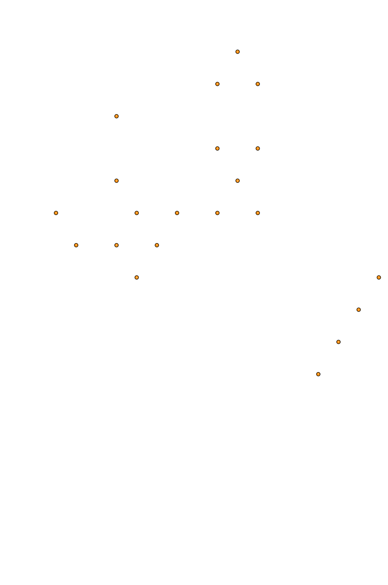

| The castle |
Fairlight's castle is 81 rooms, each a little drawing program in the room table at ROOM1 (the rooms and their commands are laid out in the listing, one entry a room), and the object table at OBJECTS_TAPE -- OBJECTS while the game runs -- which says what is in each room: 207 entries of six bytes for the things, the creatures and the furniture, and 174 of eleven for the doors. There is no map, no grid and no room numbering scheme: a room's number is only its place in the room table, and the castle is held together by nothing but its doors, each of which names the room behind it and the place the knight arrives at there. This page lays the rooms out by those doors, marks on the map where things are, and lists the doors, the keys and the quest; the rooms page has every room with its picture and what it holds.
What is measured and what is read. Measured, in SkoolKit's simulator: every room's picture (entered the way a new game enters its first room, and drawn by the game's own code, ROOMST and DRAW_CURRENT_ROOM), what each room holds as the game builds it, the room's box (its floor, ceiling and walls, the six records at FIXED_RECORDS), every door walked through, the pit in room 10, the room 19 bug and the ending's test. Read from the tables: where every door leads and the key it needs, where every thing lies at the start, the chain of keys. Worked out here from the doors' arithmetic: where each room lies relative to its neighbours, and that the whole does not fit together. Chosen by this page, not the game: the grid the rooms are drawn on.
Every room drawn by the game, at half size, on a grid of the page's making. The grid follows the game's own diagonals: a door out through the back right wall (up x) leads, where the grid allows, to the tile up and to the right, the back left (up y) up and to the left, and a hole in the ceiling to the tile straight above. 116 of the 173 doors lead to the tile next door in that direction; the others are drawn as longer lines, because the castle cannot be laid out so that they all do (below, Why a grid). Rooms 1 and 79, which no door leads to, are in the bottom row: GAME OVER's and the title's backdrops, shown as the game shows them; room 81, the end, is shown with the verdict of a quest done. Click a room for its entry; tick a box for a layer.










Doors, and the keys they need: 174 doors, 21 of them locked. A line joins two rooms with a door between them: white for a doorway, dashed cyan for a hole, yellow with the key's number where the door needs one; an arrowhead where the way goes only one way (13 to 14, 14 to 10, 31 to 81). A key is the number of a thing in the object table.
Where a game starts: room 29. A new game's variables come from the tape's copy at the variables (copied to the master at $684C and back at every new game, TITLE_SCREEN), and their ROOM is 29; the knight's record is put back the same way, and a thing of kind 9, used, sends him to room 30 through the same code (MAIN_LOOP). Measured: the simulator's new game began in room 29.
The quest: 5 -- thing 5 in room 33, what the ending looks for; B -- the book, thing 7, in room 14; W -- room 61, where the book must be left; 8 -- room 31, whose door to the end needs thing 8; E -- room 81, the end. See The quest below.
Where the keys lie: the things that open doors, each marked with its number: thing 1 in room 20; thing 2 in room 72; thing 3 in room 41; thing 4 in room 56; thing 5 in room 33; thing 6 in room 46; thing 7 in room 14; thing 8 in room 61. Where they lie at the start of a game, from the object table; a thing dropped elsewhere is remembered there (SAVE_OBJECT_POSITIONS).
Other things to pick up: the other 82 things of the object table that can be picked up (bit 5 of their kind byte), counted by room: 2 (9), 7 (6), 13 (1), 19 (1), 20 (9), 23 (1), 24 (1), 26 (2), 28 (1), 29 (1), 34 (5), 41 (2), 43 (4), 44 (3), 45 (2), 48 (1), 49 (6), 50 (1), 55 (1), 56 (1), 57 (3), 61 (2), 64 (5), 69 (2), 71 (7), 72 (2), 75 (3). The rooms page lists them, with what each does.
Guards: 28 in 21 rooms, counted by room: 15 (1), 16 (1), 20 (1), 29 (1), 31 (1), 33 (1), 34 (1), 36 (2), 38 (1), 39 (2), 40 (1), 41 (2), 43 (2), 46 (1), 60 (2), 66 (1), 71 (1), 72 (1), 73 (1), 77 (1), 78 (3). state 6: a guard: patrols along x, chases within 30; state 9: a guard that rises out of the floor, then chases; state 10: a guard: patrols along y, chases within 30.
Trolls: 6 in 6 rooms, counted by room: 2 (1), 5 (1), 7 (1), 17 (1), 22 (1), 27 (1). state 7: the troll: chases, turning its frames to face its way.
Wraiths: 10 in 10 rooms, counted by room: 9 (1), 12 (1), 28 (1), 48 (1), 56 (1), 57 (1), 58 (1), 59 (1), 61 (1), 68 (1). state 11: a wraith: chases; state 15: waits for the book, then a wraith.
Ghosts: 10 in 7 rooms, counted by room: 3 (1), 8 (1), 28 (2), 29 (1), 32 (2), 50 (2), 51 (1). state 13: the ghost: wanders, takes things it meets.
Strikers: 7 in 2 rooms, counted by room: 45 (5), 46 (2). state 4: strikes at the knight within its reach.
Bouncing things: 14 in 9 rooms, counted by room: 15 (2), 19 (2), 42 (2), 53 (1), 54 (1), 62 (1), 64 (3), 65 (1), 80 (1). state 3: bounces about, hurting what it touches.
Flames and flickers: 26 in 21 rooms, counted by room: 15 (1), 16 (1), 17 (1), 18 (1), 19 (1), 20 (1), 21 (1), 25 (1), 26 (1), 27 (1), 34 (1), 35 (1), 36 (1), 37 (1), 38 (2), 39 (1), 40 (1), 47 (4), 48 (2), 70 (1), 73 (1). state 12: hangs and flickers (by its picture and its place, a torch's flame); state 14: hangs and flickers.
Pits: rooms 9, 12, whose floor is a record of kind 7 below a bridge: anything that falls onto it vanishes, and the knight's LIFE goes to 0 (OBJECTS_MEET); and room 10, whose pit is a door -- a hole in the floor that leads to room 0 (below, The pit in room 10).
The room 19 bug: room 19, where two things of the room's own drawing can be picked up, and rooms 25 and 21, whose door they spoil (below, The room 19 bug).
Each door gives the room behind it a place relative to its own. Along a doorway the knight's place is carried across exactly -- the door's corner in this room is the arrival point in the next -- and across it the door's face becomes the arrival point, less his depth when he goes the way the axis falls (BUMPED); his height is carried across the same way. Through a hole his x and y are carried across, and he arrives in the air, so this page takes the room below to have its ceiling at the floor above. Starting from room 29 and giving each room the place the first door found to it says, 79 rooms are placed; then every door was checked against those places, and 17 of the 173 doors put the room behind them somewhere else, by up to 436 units -- about 3.4 rooms' widths. The pairs: 3-6, 6-7, 10-14, 12-15, 36-37, 45-46, 46-52, 51-80, 53-54, 63-65. Some are a few units out, and follow from how each door's face was taken; the rest are loops of rooms that do not close. The castle is drawn room by room, and no one room shows its neighbours, so the game never needs them to fit, and they do not. Hence the grid: it keeps each door's direction where it can and gives up distances altogether.
A door is an eleven-byte record of the object table, and becomes an object record of kind 1 when its room is entered (PLACE_OBJECT). It has no update of its own (CHE3D skips it): it is dealt with when something walks into it (BUMPED). Anything but the knight is stopped by it as by a wall.
| Byte | Record | What |
|---|---|---|
| 0 | The room the door is in | |
| 1 | Its type, $46 up: a template at $B9AA gives its size and, for some, a sprite | |
| 2-4 | +6 to +8 | Its place: x, the top, y |
| 5 | +13 | The room behind it |
| 6 | +14 | The key: the number of the thing that must be in the place in use, or 0 for none |
| 7, 8 | +15, +16 | The x and the top the knight arrives at (each carried across relative to the door where it is not the way through) |
| 9 | +17 | The way through: the direction bits of KNIGHT_CONTROLS -- $04 down x, $08 up x, $40 up y, $80 down y, $10 up, $20 down |
| 10 | +18 | The y he arrives at |
44 lead back right (up x); 45 lead front left (down x); 36 lead back left (up y); 37 lead front right (down y); 5 lead up, a hole in the ceiling; 7 lead down, a hole in the floor. The knight goes through only moving the way the door goes, which the fall that is added to every step he takes on the ground includes: so he drops through a hole in the floor by walking onto it, and to go up through a hole in the ceiling he must jump into it from something high enough.
Every door walked. When this page was built each door was tried in the simulator, each from a fresh entry into its room: the knight put just outside the doorway, touching it, within its width and with his feet on its foot, and walked the way it goes; put just above a hole in the floor; or, for a hole in the ceiling, stood under it on the room's floor raised to just below it (a staging: the floor record's height changed) and made to jump. Each was tried from a few places along the door, since furniture stands in parts of some doorways, and a thing lying where he would arrive keeps him out (BLOCKED, BUMPED): that was seen at some place for 1 door (room 53's to 29). LIFE was kept up throughout. Without any key, 151 of the 174 doors took him through, 151 of them to the room the record names; 2 that need no key did not: room 13's to 14 (stayed; with what lay over it that can be moved taken away (things 45, 46): went through to room 14), room 61's to 60 (stayed; with the book lying in the room: went through to room 60). Of the 21 locked doors, 21 said LOCKED and kept him out; then, with the key laid in the room and picked up the game's own way (X) into the place in use, 21 let him through to the room they name.
Doors are opened by 8 things, each named by the number of its entry in the object table. The thing must be in the place in use when the knight walks into the door, or it is LOCKED; carried in another place it does not count.
| Thing | Picture | Lies in | Opens |
|---|---|---|---|
| 1 | 20 | 21 to 22 (up y); 22 to 21 (down y); 23 to 25 (down y); 24 to 26 (down y); 25 to 23 (up y); 26 to 24 (up y) | |
| 2 | 72 | 63 to 65 (down y); 65 to 63 (up y) | |
| 3 | 41 | 39 to 42 (down y); 42 to 39 (up y); 42 to 45 (down y); 45 to 42 (up y) | |
| 4 | 56 | 62 to 77 (down y); 77 to 62 (up y) | |
| 5 | 33 | 4 to 13 (up x) | |
| 6 | 46 | 46 to 57 (up y); 57 to 46 (down y); 57 to 62 (up y); 62 to 57 (down y) | |
| 7 | 14 | 60 to 61 (up) | |
| 8 | 61 | 31 to 81 (up x) |
Which rooms are open to a knight with which keys, read from the doors: from room 29, through every door that needs no key, then again with the keys lying in the rooms reached so far, until no new key turns up. This counts only doors and keys -- not how much he can carry, the jumps, the things that block an arrival -- and takes the way out of room 61 to be open once its way in is (see the quest).
| Keys | Rooms newly open | Keys found there |
|---|---|---|
| no key | 65: 2, 3, 4, 5, 6, 7, 8, 9, 10, 11, 12, 15, 16, 17, 18, 19, 20, 21, 25, 26, 27, 28, 29, 30, 31, 32, 33, 34, 35, 36, 37, 38, 39, 40, 41, 45, 46, 47, 48, 49, 50, 51, 52, 53, 54, 55, 56, 62, 63, 64, 65, 66, 67, 68, 69, 70, 71, 72, 73, 74, 75, 76, 77, 78, 80 | 1, 2, 3, 4, 5, 6 |
| with 1, 2, 3, 4, 5, 6 | 12: 13, 14, 22, 23, 24, 42, 43, 44, 57, 58, 59, 60 | 7 |
| with 1, 2, 3, 4, 5, 6, 7 | 1: 61 | 8 |
| with 1, 2, 3, 4, 5, 6, 7, 8 | 1: 81 | - |
Never open by any door: rooms 1, 79. Room 1 is drawn only as the backdrop to GAME OVER and room 79 only under the title (TITLE_SCREEN); the object table puts nothing in either, and neither has a patch for the room's box (the six records the collision code tests). Room 0 is not a room at all: see the pit in room 10.
The story has the knight bring the Book of Light out of the castle to free the wizard. What the game checks is this. Room 81 is the end: ROOMST does not enter it but draws it, and prints that the quest has succeeded if one of the five things carried is number 5 in the object table -- the thing that lies in room 33 at the start -- and failed if not; then GAME OVER either way. Measured: entering room 81 with nothing carried, ROOMST went to its failure (printed FAILED); with thing 5 picked up first, to its success (printed SUCCEDED, as the game spells it). Thing 5 is this:  -- not the picture of a book. The thing drawn as a book,
-- not the picture of a book. The thing drawn as a book,  (thing 7, in room 14), is the one of kind 11, and does not go to the end.
(thing 7, in room 14), is the one of kind 11, and does not go to the end.
The only door into room 81 is in room 31 and needs thing 8, which lies in room 61. Room 61 is reached by one way, a hole in the ceiling of room 60, and that door's key is thing 7 -- the book. Its only way out is a hole in its floor, which lets him through only while a thing of kind 11 -- the book -- lies in the room (BUMPED); and there the figure that has stood still until then (state 15, CREATURE_UPDATE) wakes as a wraith. So the book is used up: it opens room 61 and is left on its floor. And the book lies in room 14, reached only by a hole from room 13, which is reached by the door from room 4 whose key is thing 5 itself. The chain, read from the doors and the table:
Which thing the story's Book of Light is, the game does not say; the test at the end is for thing 5.
Room 10's object list has a door of type $54 with no sprite at x 50, y 44, 80 by 40 and 2 high, its top 2 above the floor: a hole in the floor -- where the room's drawing shows a pit -- whose room behind is 0 and whose arrival point is a dummy (20, 20, 20). ROOMST does nothing for room 0 but return, and it returns to the new game's code (TITLE_SCREEN), which saves the room's things and says GAME OVER. Since every step the knight takes includes the fall, walking onto the pit takes him through it. Measured: walked into the pit, he went through to GAME OVER, LIFE untouched. The description of ROOMST that no room 0 is ever given is so for new games but not for this door. Rooms 9 and 12's pits work differently, by a floor that kills.
Room 19's drawing places 2 things of its own, which can be picked up but, not being from the object table, have no number (+19 is 0). Picking one up asks SET_THING_ROOM to mark its entry in the table as carried (room $FE), and with number 0 that routine counts 256 entries of six bytes on from just below the table: 1536 bytes in, the x of the table's entry 214, the door from room 25 to room 21. Measured: with the room's creatures frozen and the thing laid in front of him, X picked it up (carried) and that byte went from 50 to 254. Then, with the byte at 254, the door walked into from room 25: stayed; before, went through to room 21. Room 21 can still be reached from room 25 by other ways round; dropping the thing would write 19 there instead.